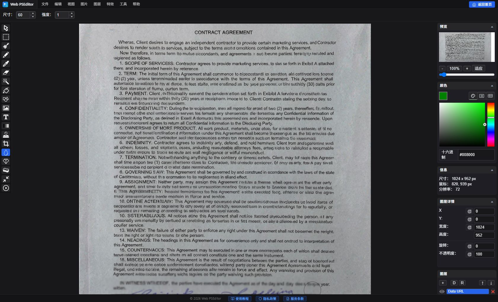

实战教程：如何在线为敏感信息打马赛克与高斯模糊
在社交平台晒图、给客户发订单凭据或汇报工作时，如果不慎泄露手机号、身份证号、家庭住址或财务数字，后果不堪设想。很多在线打码工具会偷偷将你的图片上传到他们服务器，存在极大安全隐患。使用 Web PSEditor，数据自始至终停留在你本地电脑，连处理过程都不经过任何服务器。
1. 导入你的截图，选择左侧 矩形选区工具（Selection Tool）。
2. 用鼠标框选出需要遮挡的敏感文字或头像区域。
3. 点击顶部菜单 【特效 (Effects)】 -> 【像素化 (Mosaic / Pixelate)】，拖动滑块调整像素块大小（建议 10~20 像素），点击确定！马赛克会彻底破坏原始像素，法律敏感内容首选此方案。
如果你觉得像素马赛克太生硬影响美观，可以使用高斯模糊：
1. 同样先用选区工具框选目标敏感区域。
2. 点击顶部菜单 【特效 (Effects)】 -> 【模糊 (Blur)】 -> 【高斯模糊 (Gaussian Blur)】。
3. 将模糊半径设为 8 ~ 15 像素，文字即可化作柔和的磨砂雾化效果，既防识别又极其精致美观。
追求效率也可以直接用左侧 模糊工具（Blur Tool）：把笔刷尺寸调到 50 ~ 80，在敏感区域来回涂抹几笔即可。

点击左侧 文字工具（Text Tool），在画面上输入如：仅供办理XX业务使用 他用无效，设置颜色为浅灰色，并在右侧图层面板将该文字图层的不透明度（Opacity）调至 40%，完美防盗用！
- 打码力度太轻 —— 浅度模糊或过小的马赛克块可以被去模糊工具甚至人眼还原。马赛克块至少 10~20 像素，模糊半径至少 8 以上。
- 只遮住看得见的部分 —— 邮箱、证件号只打一半，对方仍能推测剩余内容。要整串遮盖，并前后多遮一位。
- 忘记照片元数据（EXIF） —— 截图可能携带 GPS 定位等信息。通过 Web PSEditor 重新导出会自动剥离原始元数据。
常见问题 FAQ
马赛克和高斯模糊能被还原吗？
强度足够的马赛克无法还原——原始像素已被彻底替换。轻度模糊存在被部分还原的可能，拿不准就用观感可接受的最大强度。
直接画一个黑色色块是不是更安全？
纯色色块确实最保险，只是观感生硬。对外展示的图片用高强度模糊/马赛克是常见折中；法律文件建议马赛克或纯色色块。
打码过程中我的文档会被上传吗？
绝对不会。全部处理都在你的浏览器内通过 HTML5 Canvas 完成，没有服务器参与——这正是合同、证件、病历可以放心处理的原因。
一张图里有多处敏感信息，要重复操作吗？
是的，对每处敏感区域重复"框选 + 特效"即可；或者直接用模糊工具逐个涂抹，最后统一 【文件】 -> 【另存为】 导出一次。
相关教程推荐
无需安装软件，立即在浏览器中应用本篇所学技巧，纯本地处理无隐私泄露风险。